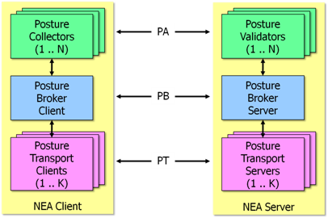
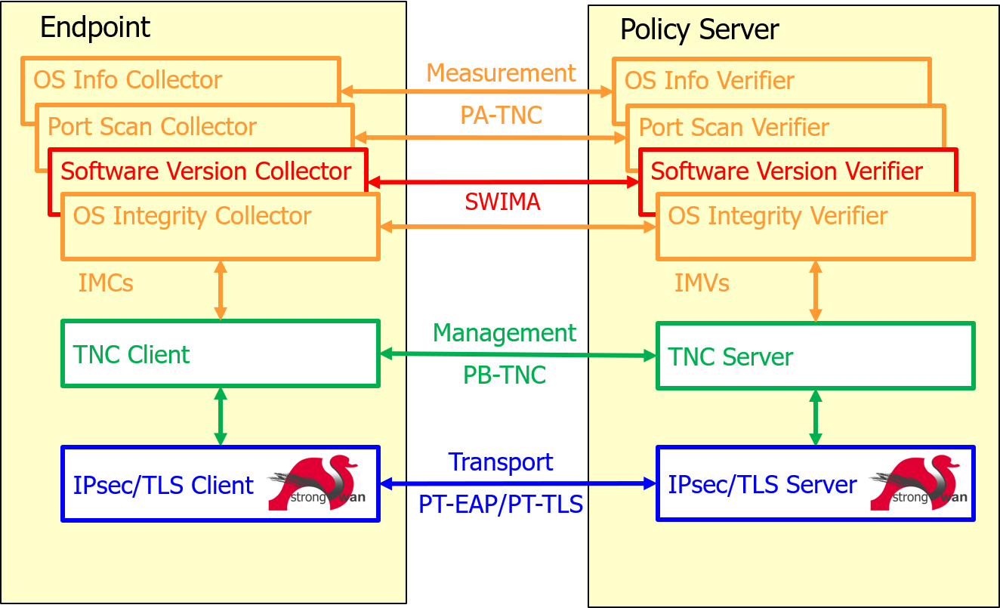
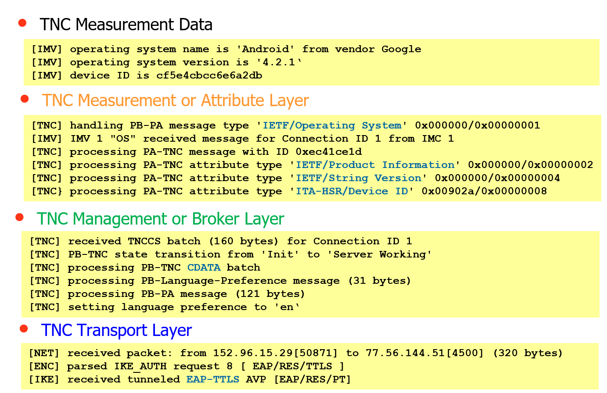

Trusted Network Connect
Network Endpoint Assessment
The Network Endpoint Assessment (NEA) Internet standard RFC5209 defines a generic framework on how the state of health or posture of a network endpoint (NEA Client) can be assessed by a central management system (NEA Server).

The NEA architecture comprises three communications layers governed by the following generic protocols:
TNC Protocol Layers
One specific and up to now the only implementation of NEA is Trusted Network Connect (TNC) originally defined by the Trusted Computing Group (TCG).

- PA-TNC (RFC5792): Posture Attribute Protocol with TNC
-
PA-TNC was derived from the TCG TNC IF-M 1.0 measurement protocol.
PA-TNC bundles standard IETF and/or vendor-specific PA-TNC attributes into PA-TNC messages on Integrity Measurement Collectors (Posture Collectors) and Integrity Measurement Verifiers (Posture Validators) according to standard IETF and/or vendor-specific PA subtypes. - PB-TNC (RFC5793): Posture Broker Protocol with TNC
-
PB-TNC was derived from the TCG TNC IF-TNCCS 2.0 client-server protocol.
PB-TNC packs PA-TNC messages received from Integrity Measurement Collectors (Posture Collectors) on the NEA client side or from Integrity Measurement Verifiers (Posture Validators) on the NEA server side into PB-TNC batches that are exchanged between the TNC Client (Posture Broker Client) and the TNC Server (Posture Broker Server).
PB-TNC batches are also used to send final Assessment Results together with optional Access Recommendations and Remediation Parameters from the TNC Server to the TNC Client. - PT-TLS (RFC6876): Posture Transport Protocol over TLS
-
PT-TLS is a Posture Transport (PT) protocol protected by a TLS channel.
PT-TLS is responsible for transporting PB-TNC batches over the network between the PT Client component of the NEA Client and the PT Server component of the NEA Server and is usually used for periodic posture or state-of-health assessments of an endpoint continously connected to a secured home network. - PT-EAP (RFC7171): Posture Transport Protocol for EAP Tunnel Methods
-
PT-EAP is an inner EAP method (EAP type 54) used within a TLS-protected EAP tunnel method like EAP-TTLS (RFC5281) running e.g. over IKEv2 EAP (strongSwan) on layer 3 or EAPOL (wpa_supplicant) on layer 2.
PT-EAP is responsible for transporting PB-TNC batches over the network between the PT Client component of the NEA Client and the PT Server component of the NEA Server and is usually used in the early phase when an endpoint wants to connect to a secured home network via VPN (layer 3) or over LAN/WLAN (layer 2) and its posture or state-of-health has to be assessed first.
TNC Protocol Layer Example
This example shows the messages received by a NEA server from a NEA client on the PA-TNC, PB-TNC and PT-EAP layers.

The Operating System Integrity Measurement Verifier (OS IMV) receives measurement data from an Operating System Measurement Collector (OS IMC) running on an Android endpoint.
The measurements consist of three PA-TNC attributes that are packed into a PA-TNC
message of the standard IETF subtype Operating System. The first two PA-TNC
attributes of the IETF standard types Product Information and String Version
whereas the third PA-TNC attribute has the vendor-specific type Device ID
defined in the PEN namespace of the ITA-HSR organization.
The PA-TNC message is delivered by the TNC Client to the
TNC Server in a CDATA (ClientData) PB-TNC batch. The
TNC Client can also request the language in which
optional Access Recommendations and Remediation Parameters are going to be
sent.
The PB-TNC batch is transported via PT-EAP tunneled in EAP-TTLS over IKEv2 EAP.
TNC Client
There are two ways how the strongSwan TNC Client functionality can be used to collect the state-of-health or posture of an endpoint:
-
Collocated with a strongSwan VPN client (Network Access Requestor) running a
charondaemon that communicates over IKEv2 EAP (PT-EAP). -
The stand-alone
pt-tls-clientcommunicating over TLS (PT-TLS).
TNC Server
There are two ways how the strongSwan TNC Server functionality can can be used to assess the state-of-health or posture of associated endpoints:
-
Collocated with a strongSwan VPN gateway (Policy Enforcement Point) running a
charondaemon that communicates over IKEv2 EAP (PT-EAP). -
A stand-alone strongSwan Policy Decision Point (PDP) based on a skeleton
charondaemon with thetnc-pdpplugin communicating either over TLS (PT-TLS) or RADIUS (IF-PEP).
Software Inventory
One important application of the TNC framework is the management of Software Inventories. Storing the complete version history of all software packages installed on an endpoint in a central database allows to proactively take countermeasures when a new vulnerability is discovered in a software package because immediately all endpoints that are concerned can be listed by the strongTNC tool.
Measured Boot
Remote Attestation of the boot phase by measuring the BIOS/UEFI entries and the boot loader before executing them is also supported by the strongTNC tool.
File Integrity Measurements
The Linux Integrity Measurement Architecture (IMA) allows to
measure all system files and libraries before executing them. The file hashes
are extended into PCR10 of the endpoint’s Trusted Platform
Module (TPM). The strongTNC database stores reference values
of all file hashes so that tampering of system files by root kits can be detected.
Publications
-
TCG Developer Blog July 2018: Use of the Software Inventory Message and Attribute (SWIMA) Standard.
-
Information Security in Healthcare Conference Rotkreuz, June 2018:
Starke Identität und Sicherheit von IoT Geräten. -
Cyber-Security Event Singapore, March 2017: TPM-Based Attestation of IoT Devices.
-
Connect Security World Marseille, September 2016: Mutual Attestation of IoT Devices.
-
TCG Members Meeting Vienna, June 2016: Mutual Attestation of IoT Devices and TPM 2.0 Support.
-
CeBIT Hannover, March 2016:
-
TCG Members Meeting Edinburgh, June 2015 : Mutual Attestation of IoT Devices.
-
TCG Demo at RSA Conference San Francisco, April 2015: Securing IoT with Trusted Computing.
-
TCG Members Meeting Barcelona, June 2014: TNC Endpoint Compliance and Network Access Control Profiles.
-
Trusted Computing Conference Orlando, September 2013:
Android BYOD Security using Trusted Network Control Protocol Suite. -
TCG Members Meeting Dublin, June 2013: strongSwan TNC Activities Update.
-
Linux Security Summit San Diego, August 2012:
The Linux Integrity Subsystem and TPM-based Network Endpoint Assessment. -
TCG Members Meeting Munich, June 2011: The strongSwan IPsec Solution with TNC Support.